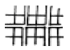
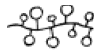
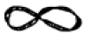
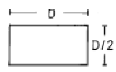
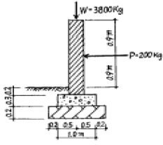
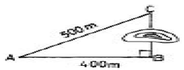

조경산업기사 (2005-03-06 기출문제)
1과목: 조경계획 및 설계
1. 다음은 단지계획, 동선계획 등에 사용하는 일반적인 구성 패턴이다. 클러스터 형으로 가장 적당한 것은?



(정답률: 50%)

2. 표준 골프코스는 18홀, 72파(par)로 구성한다. 다음 중 표준 골프 코스의 구성으로 알맞게 된 것은?
- 쇼트홀 4개, 미들홀 8개, 롱홀 6개
- 쇼트홀 4개, 미들홀 6개, 롱홀 8개
- 쇼트홀 6개, 미들홀 6개, 롱홀 6개
- 쇼트홀 4개, 미들홀 10개, 롱홀 4개
(정답률: 67%)
3. 공원의 동선계획에 대한 내용이 옳지 못한 것은?
- 짧은 통행로는 가능한한 직선적 연결이 바람직하다.
- 전체적인 체계는 서로 다른 통행 수단의 동선이 상호간 연결과 분리가 적절히 이루어져야 한다.
- 보행동선과 차량동선이 만나는 곳에서는 차량동선을 우선으로 한다.
- 막힘이 없고 일정한 순환 체계를 갖도록 한다.
(정답률: 75%)
4. 어떤 지역의 경관 특성을 향상시키기 위한 방법으로 잘못된 것은?
- 부조화요소를 제거한다.
- 주경관요소와 대등한 상징물을 설치한다.
- 강조요소를 도입한다.
- 경관특성에 조화되는 계획을 수립한다.
(정답률: 85%)
5. 조경계획의 대상은 그 성격에 따라 몇개의 그룹으로 나눌수 있다. 레크리에이션계의 조경공간이 아닌 것은?
- 도시공원
- 자연공원
- 경승지
- 보행자 공간
(정답률: 64%)
6. 주택 단지 조경계획시 보차 분리를 위하여 실시되는 기법이라고 할 수 없는 것은?
- 평면적 분리 수법
- 시간적 분리 수법
- 입체적 분리 수법
- 심리적 분리 수법
(정답률: 45%)
7. 개인적 공간(個人的空間)에 대한 설명으로 옳지 않은 내용은?
- 개인의 주변에 형성되고 보이지 않는 경계를 지닌다.
- 타인이 침해하면 불쾌감을 느낀다.
- 모든 사람이 똑같지 않다.
- 개인적 공간은 상황변화에 따라 공간의 크기가 변하지 않는다.
(정답률: 69%)
8. 벽과 휀스의 기능과 가장 관계가 적은 내용은?
- 공간의 한정
- 시선의 차단
- 공간의 연계
- 기후의 조절
(정답률: 39%)
9. 국토의계획및이용에관한법률에 의한 도시지역의 용도지역이 아닌 것은?
- 주거지역
- 상업지역
- 공업지역
- 자연풍경지역
(정답률: 70%)
10. 주택건설기준등에관한규정에 의거한 300세대의 공동주택을 건설하는 대지에 설치해야 할 어린이 놀이터의 최소면적(의무면적)은 얼마인가? (단. 시.군지역이 아닌 경우)
- 440m2
- 500m2
- 600m2
- 680m2
(정답률: 71%)
11. 스페인의 알함브라 궁원의 파티오 중 부인실에 부속된 파티오는?
- 연못의 파티오
- 사자의 파티오
- 다라하의 파티오
- 레하의 파티오
(정답률: 57%)
12. "딱딱하다","매끄럽다","까칠까칠하다"고 느껴지는 재료의 시각적인 촉감을 무엇이라 하는가?
- 양감(Volume)
- 질감(texture)
- 톤(tone)
- 율동감(rhythum)
(정답률: 80%)
13. 도시공원 중 유치거리가 150 - 250m 정도이며 면적이 1,500m2이상이 되는 공원?
- 어린이공원
- 근린공원
- 묘지공원
- 도시자연공원
(정답률: 60%)
14. 어린이공원의 설계시 고려해야 할 사항 중 적당하지 않은 것은?
- 어린이의 주 이용시간은 늦은 아침과 오후이므로 이 때 햇빛이 잘 드는 곳에 설치한다.
- 그늘은 앉아서 노는 부분과 부모의 휴식처 부근에 배치한다.
- 미끄럼틀, 놀이조각 등 집중적인 놀이시설물은 입구에서 먼쪽에 설치하여 혼잡해지지 않도록 한다.
- 도섭지(渡涉地), 연못 등은 중앙이나 사방에서 잘 보이는 부분에 배치한다.
(정답률: 62%)
15. 도시공원 안의 건축물의 건폐율이 가장 높은 것은?(관련 규정 개정전 문제로 기존 정답은 3번이었습니다. 여기서는 3번을 누르면 정답 처리 됩니다. 자세한 내용은 해설을 참고하세요.)
- 어린이 공원
- 50만 m2 이상의 도시자연공원
- 3만 m2이상 10만 m2미만의 근린공원
- 묘지공원
(정답률: 40%)
16. 다음 중 안정, 확실, 강력, 질서, 간략, 신뢰성 등의 감각을 느끼게 하는 시각적 형태는?
- 기하 직선적 형태
- 자유 직선적 형태
- 자유 곡선적 형태
- 규칙적 반복의 리듬형
(정답률: 50%)
17. 자연공원법에서 규정하고 있는 자연보존지구에서 허용되는 행위가 아닌 것은?
- 학술연구행위를 위하여 필요하다고 인정되는 최소한의 행위
- 환경부령이 정하는 최소한의 공원시설의 설치
- 군사 및 통신시설의 설치 장소로 인정되는 환경부령이 정하는 최소한의 시설의 설치
- 농업·축산업등 1차산업행위 및 환경부령이 정하는 국민경제상 필요한 시설의 설치
(정답률: 53%)
18. 경사부지(site)에 대한 설명이 옳다고 볼 수 없는 것은?
- 경사면 부지는 조망에서 큰 흥미를 끌게 된다.
- 경사부지는 다이나믹(Dynamic)한 경관 특질을 갖는다.
- 경사면의 계획방향은 내향적(內向的)이고, 중력은 상향적(上向的)이다.
- 생활 환경보호를 위해 경사면을 이용하는 경우도 많다.
(정답률: 59%)
19. 주어진 공간에 일정한 이용목적을 설정하고 그러한 이용목적에 가장 합리적인 배치를 하기 위해 여러가지의 연결 방식을 검토하는 과정을 무엇이라고 하는가?
- 토지이용계획
- 동선체계의 계획
- 행태 분석
- 기능 분석
(정답률: 67%)
20. 개인 주택에서 침실 앞에 조성되는 정원 공간의 성격으로서 가장 적절한 것은?
- 관상공간
- 동적공간
- 실용공간
- 산책공간
(정답률: 50%)
2과목: 조경식재
21. 가을에 잎이 황색으로 되는 수종으로 짝지어진 것은?
- 생강나무, 백합나무
- 은행나무, 산딸나무
- 복자기, 화살나무
- 마가목, 담쟁이덩굴
(정답률: 20%)
22. 다음 중 분진(粉塵)의 피해에 가장 강한 나무는?
- 은행나무
- 소나무
- 주목
- 느티나무
(정답률: 48%)
23. 다음 중 배식 설계에 있어서 독립수의 생김새를 강조하는 위치에 식재할 수 있는 수목으로 가장 적당한 것은?
- 일본목련
- 명자나무
- 진달래
- 라일락
(정답률: 36%)
24. 수목을 이식할 때 뿌리분의 모양을 다음과 같이 해야하는 수종으로 가장 적당한 것은?

- 해송
- 느티나무
- 은행나무
- 양버들
(정답률: 44%)
25. 분수를 설치할 때는 뒷쪽에 짙은 녹색의 상록 침엽수를 배식 하여야 한다. 이것은 어떠한 미적 원리를 적용한 것인가?
- 통일
- 변화
- 대비
- 카무플라즈
(정답률: 알수없음)
26. 소나무과 소나무속의 수종 중에서 2개의 잎이 속생(束生)하지 않는 수종은?
- 백송
- 소나무
- 반송
- 해송
(정답률: 36%)
27. 방화수가 갖추어야 할 조건 중 옳지 않은 것은?
- 수관(樹冠)의 중심이 추녀보다 낮은 위치에 있을 것
- 상록수인 동시에 지엽이 밀생하고 있는 것
- 잎이 작거나 가느다란 것
- 잎이 많은 수분을 갖는 것
(정답률: 80%)
28. 일반적인 난지형 잔디의 종자 파종시기로 가장 적당한 것은?
- 3월
- 4월
- 5월
- 9월
(정답률: 48%)
29. 다음 중 자연풍경식 식재 방법인 것은?
- 열식
- 단식
- 대식
- 부등변삼각형식재
(정답률: 67%)
30. 공원에 인접해 있는 주택지를 차폐하려고 한다. 벤치에 앉아서 관망을 할 때, 벤치에서 주택까지의 거리는 50m, 주택의 높이는 3m 일때, 식재할려고 하는 위치까지의 거리는 20m 지점을 정하였다. 이때 수목의 높이는 얼마가 좋은가?(단, 벤치에 앉아 있는 경우 눈의 높이는 110cm 이다.)
- 1.85m
- 1.86m
- 1.90m
- 1.95m
(정답률: 69%)
31. 다음 중 다공질경량토(多孔質經量土)가 아닌 것은?
- 퍼얼라이트(pearlite)
- 화산(火山) 모래
- 생명토(生命土)
- 버어미큘라이트(vermiculite)
(정답률: 54%)
32. 식재형의 구성에 의한 배식을 가장 바르게 설명한 것은?
- 식재형의 기본형은 반드시 3의 배수여야 한다.
- 두 그루의 수목을 근접하게 식재하여 대립되게 한다.
- 2본식 식재형에서 대식은 주로 동양식정원에서 사용한다.
- 삼각식수는 모든 식재법에 있어서 간격을 결정하는 기초가 된다.
(정답률: 알수없음)
33. 일반적인 수목 식재공사에 관한 다음 기술 중 잘못된것은?
- 식재 구덩이는 분의 1.5배 정도로 크기로 판다.
- 심겨지는 나무는 굴취 전에 묻혔던 것과 같은 높이로 묻히게 심는다.
- 분을 떴던 새끼나 고무바 등은 분의 형상유지를 위해 식재 후에도 보존될 수 있도록 그대로 둔다.
- 식재 구덩이 바닥에는 상토 또는 잘 부숙된 유기물을 넣고 토양소독제로 소독해 준다.
(정답률: 65%)
34. 배기 가스에 강하며 생장 속도가 빠르고, 척박지에 생육 가능한 조경용 수목은?
- 능수버들
- 금목서
- 가는 잎 조팝나무
- 반송
(정답률: 10%)
35. 다음 식물 중 지피식물로 가장 적합하지 않은 수종은?
- 줄사철
- 눈향나무
- 으름덩굴
- 족제비싸리
(정답률: 25%)
36. 다음 중 비료목으로 가장 바르게 짝지어 진 것은?
- 아까시나무, 자귀나무, 싸리나무
- 낙우송, 삼나무, 동백나무
- 쥐똥나무, 오리나무, 소나무
- 측백나무, 단풍나무, 주목
(정답률: 86%)
37. 다음 수종 중 낙엽활엽교목으로서 이식(移植)이 용이한 것은?
- 은행나무
- 은단풍나무
- 모감주나무
- 백합나무
(정답률: 46%)
38. 식재 계획의 과정 중 주민의 의견이 가장 큰 영향을 작용하는 방법은?
- 단일형
- 선택형
- 연환형
- 중복형
(정답률: 79%)
39. 다음 중 가문비나무의 속명으로 가장 적당한 것은?
- Pinus
- Cedrus
- Larix
- Picea
(정답률: 27%)
40. 수목을 만경류, 교목, 관목 등으로 분류하기도 한다. 그 분류방법에 대하여 가장 잘못 설명된 것은?
- 사람의 키를 표준삼아 나눈 것이다.
- 수목의 생장 가능한 표준적인 높이에 따른 것이다.
- 수종 고유의 수형에 따른 구분이다.
- 수목의 높이에 따른 구분이다.
(정답률: 36%)
3과목: 조경시공
41. 이음매 붙이기로 잔디밭을 조성코자 한다. 이음매의 너비를 6cm로 할 경우 뗏장 소요량은 실지면적의 몇 %가 필요한가?
- 50 %
- 60 %
- 70 %
- 80 %
(정답률: 32%)
42. 콘크리이트의 반죽질기에 직접적인 영향을 주지 않는 것은?
- 물, 시멘트비(W/C)
- 배쳐 플랜트(Batcher plant)
- 워커빌리티(Workability)
- 슬럼프 테스트(Slump test)
(정답률: 54%)
43. 장대석의 용도로 불합리한 것은?
- 계단
- 담장의 기단석
- 건물의 기단석
- 경사진 곳의 무너짐 쌓기
(정답률: 47%)
44. 시공계획서에 기재해야 할 주요항목이 아닌 것은?
- 공사 개요
- 공정표
- 가식장 계획
- 설계 변경 방법
(정답률: 45%)
45. 다음 그림과 같은 1.0B 되는 벽돌 담장에서 힘 P 에 대한 저항 모우먼트는 ?

- 280kg·m
- 320kg·m
- 1,900kg·m
- 9,100kg·m
(정답률: 36%)
46. 다음 설명 중 맞지 않는 것은?
- 유속은 운반되어진 물의 용적에 비례한다.
- 유속이 증가하면 물의 용적이 증가한다.
- 높은 유속은 지나친 침식으로 배수로를 파괴한다.
- 가장 관심이 있는 물의 성질은 물의 용적 온도이다.
(정답률: 65%)
47. 부지 정지의 목적 중 미적인 기능이 아닌 사항은?
- 운동장 건물 등 시설물을 위한 적절한 경사도를 조절한다.
- 시계(視界)를 조정한다.
- 구조물과 대지를 조화시킨다.
- 순환도로를 강조하거나 조절한다.
(정답률: 44%)
48. 다음 중 공사착공시 준비해야 하는 서류 목록에 포함되지 않는 것은?
- 착공신고서
- 세금계산서
- 원가계산서
- 예정공정표
(정답률: 54%)
49. 다음의 적산 방법 중 옳지 않은 것은?
- 수량의 계산은 지정 소수위 이하 1위까지 구하고, 끝수는 4사5입 한다.
- 모따기의 체적은 구조물의 수량에서 공제한다.
- 설계서의 총액은 1,000원 이하는 버린다.
- 잔디의 할증율은 10%이다.
(정답률: 60%)
50. 다음 중 재료의 단위중량에 관한 설명으로 가장 적당한 것은?
- 화강암의 단위중량은 2.3∼2.4ton/m3이다.
- 콘크리트의 단위중량은 자갈의 단위중량보다 크다.
- 습한 모래의 단위중량은 건조한 모래의 단위 중량보다 작다.
- 호박돌의 단위 중량은 조약돌의 단위중량보다 작다.
(정답률: 65%)
51. 네트워크 공정표의 크리티칼 패스(critical path)에 대한 설명으로 맞지 않는 것은?
- 공기는 크리티칼 패스에 의해 결정된다.
- 여러 경로 중 가장 시간이 긴 경로를 말한다.
- 크리티칼 패스는 일의 개시시점을 말한다.
- 크리티칼 패스상의 공종은 중점관리대상이 된다.
(정답률: 67%)
52. 구조물에 쓰이고 있는 지점에 관한 기술 중 틀린 것은?
- 이동지점에서 수직반력 1개만 생긴다.
- 고정지점에서 수직, 수평 및 모멘트의 3개 반력이 생긴다.
- 회전지점에서 수직반력 및 모멘트의 2개 반력이 생긴다.
- 하중이 구조물에 작용했을 때 그 하중과 비길 수 있는 힘이 반드시 구조물의 지점에 작용하여야 한다.
(정답률: 37%)
53. 일반적으로 상단이 좁고 하단이 넓으며, 자중으로 토압에 저항할 수 있으나 재료가 많이 소모되고 3m내외의 낮은 옹벽에 많이 쓰이는 것은?
- 중력식옹벽
- 캔틸래버옹벽
- 부축벽옹벽
- 조립형옹벽
(정답률: 79%)
54. 단위공사에 소요되는 기본적인 재료와 인력의 표준적인 소요량을 무엇이라고 하는가?
- 공사시방
- 적산
- 일위대가
- 내역
(정답률: 72%)
55. 조경설계기준상의 파골라의 높이로 가장 적당한 것은?
- 1.5 - 1.8 m 정도
- 1.9 - 2.0 m 정도
- 2.2 - 2.6 m 정도
- 3.0 m 이상
(정답률: 37%)
56. 자연석의 단위중량은 2.7ton/m3 이다. 자연석 10m3는 몇 ton인가? (공극율은 계산하지 않는다)
- 27
- 54
- 270
- 540
(정답률: 82%)
57. 조경공사에 있어서 시방서, 설계도면 등 설계서간의 내용이 상이한 경우 적용순서로 옳게 된 것은?
- 현장설명서 - 공사내역서 - 특별시방서 - 설계도
- 공사내역서 - 설계도 - 현장설명서 - 특별시방서
- 설계도 - 물량내역서 - 공사내역서 - 현장설명서
- 현장설명서 - 공사시방서 - 설계도면 - 물량내역서
(정답률: 47%)
58. 아래 그림과 같이 장애물이 있는 지역에서 BC의 거리는 얼마인가? (단, A B C는 삼각형임)

- 300m
- 400m
- 500m
- 600m
(정답률: 74%)
59. 유수 단면적이 100m2이고, 평균유속이 5m/sec 일 때 유량은 얼마인가?
- 500m3
- 50m3
- 25m3
- 20m3
(정답률: 60%)
60. 표고 100m로 표시된 등고선의 면적이 55m2, 101m로 표시된 곳의 면적이 45m2, 102m로 된 곳은 35m2, 103m로 된 곳은 25m2, 104m로 된 곳은 15m2이다. 표고 100m로 평탄지를 만들기 위해 절토를 할 때 절토의 양은 얼마인가?
- 50m3
- 75m3
- 140m3
- 180m3
(정답률: 70%)
4과목: 조경관리
61. 시멘트 콘크리트 포장의 파손유형으로서 줄눈의 경계를 따라 콘크리트층이 어긋나 발생하는 현상은?
- 마모
- 단차
- 박리
- 침하
(정답률: 58%)
62. 잔디깎기의 목적으로 가장 거리가 먼 것은?
- 미관을 아름답게 한다.
- 잔디의 분얼을 억제한다.
- 병해를 예방한다.
- 이용을 편리하게 한다.
(정답률: 55%)
63. 난지형(暖地型)잔디의 뗏밥주는 시기는 언제가 가장 적당한가?
- 3 ~ 4월
- 5 ~ 6월
- 10 ~ 11월
- 12 ~ 2월
(정답률: 50%)
64. 일반적으로 경기장 내의 잔디는 보통 연 몇 회를 깎는 것이 가장 적당한가?
- 연 8 ~ 14회
- 연 10 ~ 15회
- 연 18 ~ 24회
- 연 26 ~ 34회
(정답률: 25%)
65. 꽃이 많이 피도록 관리하는 방법 중 가장 거리가 먼 것은?
- 햇볕을 충분히 받게 한다.
- 물을 가급적 적게 준다.
- 개화와 관련이 없는 가지는 잘라준다.
- 인산질 비료를 적게 준다.
(정답률: 50%)
66. 목재시설물의 균류에 의한 부패를 막을 수 있는 방균제로 가장 부적당한 것은?
- 크레오소트유
- 클로르페놀류
- F.C.A.P
- 크롤나프탈렌
(정답률: 39%)
67. 오동나무 빗자루병균의 월동방법으로 가장 적당한 것은?
- 낙엽 및 풀잎에 붙어 월동
- 토양 중에서 월동
- 기주의 체내에 잠재해서 월동
- 중간기주 식물에 옮겨서 월동
(정답률: 34%)
68. 관수시 실시하는 ET(evapotranspiration)의 측정으로 가장 옳은 것은?
- 식물의 호흡과 수분으로부터 증산되어 단위시간 당 유실되는 수분의 양
- 식물의 호흡과 수분으로부터 증산되어 하루에 유실되는 수분의 양
- 태양열에 의해 단위 초당 유실되는 수분의 양
- 태양열에 의해 단위 분당 유실되는 수분의 양
(정답률: 38%)
69. 측백하늘소 성충의 발생 및 산란시기로 가장 적당한 것은?
- 1 ~ 2월
- 3 ~ 4월
- 5 ~ 6월
- 7 ~ 8월
(정답률: 43%)
70. 조경수목의 단근 효과를 가장 잘못 설명한 것은?
- 단근해서 꽃눈의 수를 줄이기 위해 한다.
- 뿌리와 지상부의 균형을 위해 한다.
- 뿌리의 노화현상 방지를 위해 한다.
- 아랫가지의 발육을 좋게 한다.
(정답률: 54%)
71. 다음 중 조경수목의 조직에 피해를 주는 천공성 해충에 해당되는 것은?
- 풍뎅이류
- 박쥐나방유충
- 집시나방
- 방패벌레
(정답률: 50%)
72. 안전관리에서 사고의 종류는 설치하자에 의한 사고, 관리 하자(瑕疵)에 의한 사고, 이용자, 보호자, 주최자 등의 부주의에 의한 사고등으로 구별된다. 이중 관리하자에 의한 대책에 해당하는 것은?
- 시설배치의 미비점을 보완
- 구조 재질상 안전에 대한 문제 여부 파악
- 이용자 부주의에 의한 사고를 예상
- 시설 노후 파손에 대한 내구연수를 파악
(정답률: 60%)
73. 조경수목의 정지(整枝), 전정(剪定) 작업에 대한 설명 중 가장 거리가 먼 것은?
- 정지, 전정작업은 자연상태에서 양호한 수형을 유지해 주거나, 예술적으로 새로운 수형을 창작하거나 생육상태의 조절 및 개화결실을 촉진하기 위해 실시한다.
- 지엽이 너무 밀생한 수목은 도장지, 역지(逆枝), 혼합지 등을 정리하여 통풍, 채광이 잘되게 함으로써 병충해를 방지하고 풍해와 설해에 대한 저항력을 강하게 한다.
- 이식수목은 뿌리가 많이 절단되거나 손상되어 생리작용이 약화되고 고사하기 쉽기 때문에 지상부의 잔가지와 지엽을 충분히 남겨 생육을 왕성하게 한다.
- 개화결실을 촉진시키기 위한 전정은 화아분화의 형성시기와 개화결실시의 습성을 잘 알고 전정하여야 한다.
(정답률: 64%)
74. 시공계획의 기본방침 결정시 유의사항으로 가장 거리가 먼 것은?
- 신기술에 대한 시도 보다는 종래의 경험을 중시한다.
- 시공계획은 공사책임자에게만 의존하지 말고 전사적(全社的)인 의견을 고려하여야 한다.
- 계약상 공기가 최적공기라고 할 수 없으며, 계약공기의 범위 내에서 더 경제적인 공기를 검토할 필요가 있다.
- 여러가지 대안을 작성, 비교하여 최적계획을 선택한다.
(정답률: 알수없음)
75. 붉은별무늬병 방제를 위해 살균제 마이틴수화제를 살포하고자 한다. 600배액으로 만들고자 할 때 물 18 L에 원액을 얼마 넣어야 하는가?
- 30g
- 33.3g
- 108g
- 300g
(정답률: 36%)
76. 조경수목의 전정에 관한 설명으로 가장 옳은 것은?
- 도장지(徒長枝)와 역지(力枝)는 가급적 보호한다.
- 꽃과 열매를 감상하는 수종은 강한 도장지를 유도한다.
- 이식한 수목은 활착을 돕기 위하여 가급적 전정을 실시한다.
- 전정은 개화와 결실에는 영향을 미치지 않는다.
(정답률: 67%)
77. 콘크리트 옹벽이 앞으로 넘어질 우려가 있을 때 옹벽 배수 구멍을 뚫어 옹벽 뒷면의 지하수를 배수구멍에 유도시킴으로써 토압을 경감시키는 공법은?
- P.C 앵커공법
- 부벽식 콘크리트 옹벽공법
- 말뚝에 의한 압성토공법
- 그라우팅공법
(정답률: 54%)
78. 표지나 간판의 정기적인 유지관리 방법 중 내용이 가장 거리가 먼 것은?
- 포장도로, 공원등의 표지판은 월 1회 청소를 실시한다.
- 비포장도로의 표지판은 월 2회 청소를 실시한다.
- 도장, 도색은 5∼6년 주기로 실시한다.
- 방향을 바로잡고, 알기 쉽게 표현한다.
(정답률: 58%)
79. 아스팔트포장의 보수공법으로 가장 부적당한 것은?
- 패칭공법(patching)
- 표면처리공법
- 덧씌우기 공법(overlay)
- 주입공법
(정답률: 61%)
80. 다음 네트워크 기법의 용어에 대한 설명으로 틀린 것은?
- 더미 - 실제의 작업은 동반하지 않으나 선행과 후속의 관계를 나타내기 위해서 사용하는 것이며, 보통 점선으로 표현한다.
- 크리티컬 패스 - 일정계획을 네트워크에 조립할 경우 일의 개시에서 완료까지에 이르는 여러 가지 경로 중 가장 긴 경로를 가리킨다.
- 액티비티 - 대개 작업 단위를 나타내는 것으로 bigcirc표로 표시되기도 한다.
- 엘로우도 - 네트워크의 종류 중 더미표현을 필요로 하지 않아서 실제의 공종표로 사용할 때 쓰이는 방법이다.
(정답률: 54%)